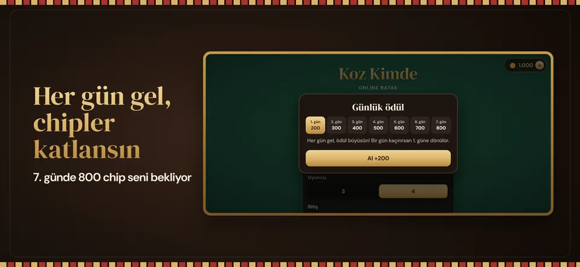
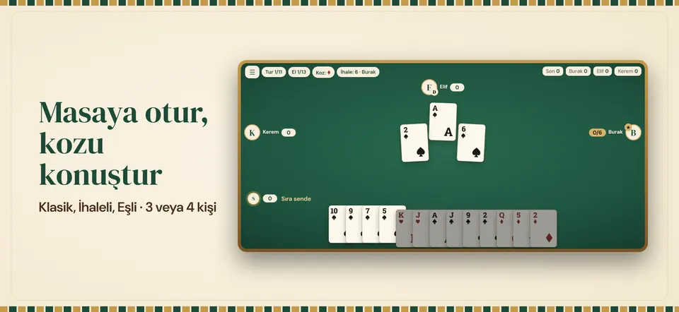
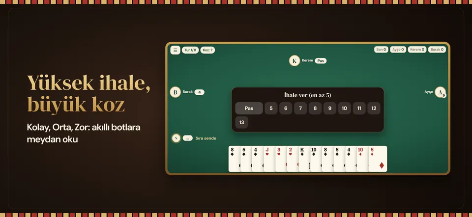
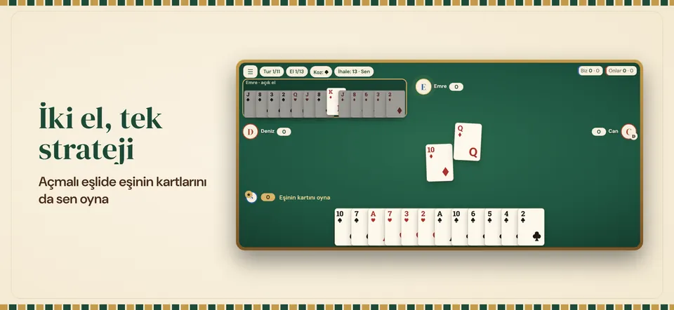

Games / Koz Kimde

Batak card game
Koz Kimde
Take a seat, make your bid and call trumps. Koz Kimde is Batak, Turkey’s favorite trick-taking card game, with real table rules. Play the computer as much as you like, create a room with friends or meet new opponents online.




How to play
- Bid how many tricks you will take. The highest bidder calls the trump suit.
- You must follow suit and beat the card on the table if you can.
- If you cannot follow suit you must play a trump. Trumps cannot be led until a trump has been played.
- Take at least as many tricks as you bid. Taking every trick in a hand wins the game on the spot.
Game modes
- Classic (Spades trump): spades are always trumps and everyone says how many tricks they will take.
- Bidding, solo: the highest bidder calls trumps and everyone plays for themselves.
- Bidding, partners: partners sit across from each other and bid for the team.
- Open-hand partners: the winning bidder’s partner lays their cards face up and the bidder plays both hands.
- 3 or 4 players; 5, 11 or 21 rounds.
Smart bots
- Easy, Medium and Hard bots count the cards that have been played.
- They try to drop your king and help their partner.
- Play offline as much as you like.
Play online
- Create a room with friends and share the 6-digit code.
- Quick match: bots fill empty seats if the table is not full.
- A move timer and bot takeover on disconnect mean the game never stalls.
- Online tables are free. Win to raise your rating.
Tips
- Count trumps. Once you know how many are still out, you know which of your high cards will hold.
- Bid for the tricks you can see, not the ones you hope for. Missing a bid costs more than a careful bid gives up.
- In partner games, lead your partner’s strong suit and let them win tricks you cannot.
- Keep a low card in each suit when you can. It lets you hand the lead to someone else at the right moment.
- In Open-hand mode, plan both hands together: decide which hand wins each trick before you play the first card.
Questions
Is Koz Kimde free?
Yes. Playing the computer and online tables are free. Chips are only for table colors: there is no betting, and chips cannot be bought or cashed out.
Can I play in a browser?
Yes, at kozkimde.alaystudio.app as a guest. Signing in to an account is available in the mobile app.
Can I play offline?
Yes. Games against the bots work without a connection.
Which languages does it support?
Turkish and English.